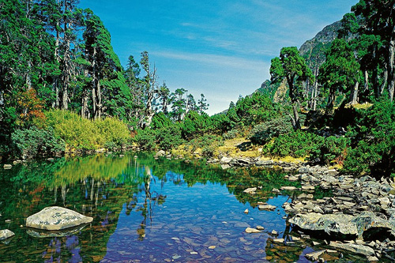
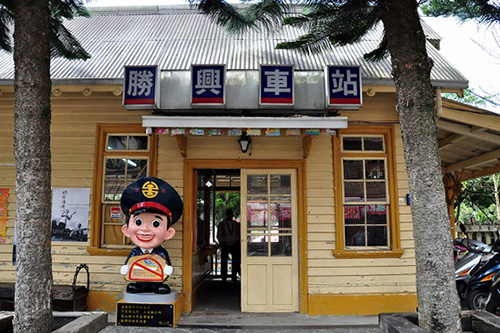

-
達觀山自然保護區
位於桃園市復興區和新北市烏來區交界處，原名拉拉山，西元1975年更名為達觀山，在泰雅族語是「美麗」的意思， 1986年成立自然保護區至今，範圍涵蓋北橫巴陵附近山區是台灣著名的國有林地，達觀山自然保護區內的檜木巨木群 、山毛櫸、扁柏、台灣黑熊、彌猴、帝雉和水鹿等動植物已列入國家保育類。
-
桃園忠烈祠
由桃園郡守谷義廉呈報新竹州知事赤堀鐵吉核准，擇址於桃園市區東北郊的虎頭山麓。昭和 12年〈西元 1937年〉由桃園郡役所〈今桃園縣政府〉庶務係吏員春田直信設計、監造。昭和 13年（西元 1938年） 6月 10日竣工，並舉行竣工鎮座式（落成典禮）。
-
雪霸國家公園
雪霸國家公園於81年7月1日成立，是台灣第五座國家公園，位於台灣中北部，屬高山型國家公園。 園區以雪山山脈為主軸，範圍涵括了新竹縣五峰鄉和尖石鄉、苗栗縣泰安鄉、台中縣和平鄉，總面積達76,850公頃。 園區內地形錯綜複雜，景色氣象萬千，高峰溪流景觀更是雄偉壯麗。
-
南園人文客棧
南園原為聯合報系創辦人王惕吾先生退休隱居之所，由台灣建築之父漢寶德教授精心設計而成，依山水而建， 融合江南庭園、閩式建築、洋樓拱廊之風格，興建動員上百名手藝精湛木工與各方藝師，精雕細琢，成就台灣 最為珍貴的檜木建築群。隱於山林的風貌，曾為台灣款待過許多元首級的人物。
-
新月沙灣
「新月沙灣」是最近幾年才開發的免費海水浴場，位於新竹縣竹北市坎仔腳。因沙灘形似新月般彎曲而得名， 後因舉辦音樂季而廣為人知。沙灘上設備齊全，備有廁所、更衣室、沖水處和活動中心，遊客們可在此玩砂、 戲水、看寄居蟹，還可體驗沙灘車、水上摩托車，更是新人拍照的熱門景點。
-
十七公里海岸風景區
「十七公里海岸風景區」北起南寮，南至南港，長約十七公里，屬離水堆積海岸，擁有上千公頃的潮間帶， 孕育了大量的蝦蟹螺貝類，為北台灣最大的海濱溼地。範圍涵蓋了新竹漁港娛樂漁船碼頭、港南運河、紅樹林公園、 風情海岸、海山漁港觀海台及水港景觀等沿線景觀，並將垃圾掩埋場整修為「看海公園」、「海天一線」，統稱為「新竹海八景」。
-
世博台灣館
曾經轟動一時，在上海世博會上閃耀著光芒的台灣館，會後歷經多次波折，如今完完整整地搬回了新竹風城，看 著屹立不搖的天燈靜靜輪番著光雕，完全不受九降風的影響，內心滿滿的感動與驚呼！四樓高的標的物，遠遠就能看見天燈， 不自覺得讓人加快腳步，想近距離觀看。
-
司馬庫斯部落
司馬庫斯位於台灣東北角雲霧盛行的地區，海拔約1600公尺間，又名「黑色部落」，當地以紅檜巨木林區聞名全省， 由部落前往原始林，約需二小時腳程，來到紅檜巨木林區，您可以看到有號稱「神木大老爺」的巨人神木，樹齡約2500年， 樹圍20.5公尺，樹高約35公尺，其最大特色為「人」字的樹型，因神木群的發現吸引了許多人潮，也成為檜木的故鄉。
-
內灣老街
「內灣老街」位於新竹縣橫山鄉，舊時為進出盛產林木及礦產的尖石山區的最主要道路，隨著林業及礦業的沒落而歸於寧靜， 經過商圈再造之後，展現全新風貌。內灣老街總長約有200公尺，街道兩旁皆是具有地方特色美食店家和小吃攤商， 包含野薑花粽、紫玉菜包、客家擂茶、牛浣水、過鍋米粉…等客家美食。
-
大霸尖山
大霸尖山屬於雪山山脈，位於雪山聖陵線的北端，大霸尖山主脊海拔最高有3492公尺，圓柱形的山形與岩石峭壁讓大霸尖山有了 「世紀奇峰」的稱號。因大霸尖山的山形高聳且直立，遠觀如圓柱桶般，因此當地居民將大霸尖山稱為「酒桶山」。 在登山的過程中原始林相隨著高度而變化，更能看見罕見的台灣原生檜木以及豐富的動植物生態。欲進入大霸尖山需辦理入山證。
桃竹訂房推薦
桃竹景點介紹
桃竹飯店介紹
-
桃園翰品酒店
翰品酒店桃園為當地首屈一指的商務飯店，座落於桃園市中心火車站旁、百貨商圈，金融商業為桃園商業文化彙集地。比鄰八德、龜山高科技園區，近桃園國際機場。 2013年1月全新升級，酒店內富麗水晶吊燈點綴挑高七米大廳氣派非凡；全新餐飲風格精采呈現，提供道地廣東料理，精心打造容納150桌歐洲典雅復古風格婚宴場地以及西式美味佳餚。
-
桃園福容大飯店
位於國門之都的桃園核心地帶，中正藝文特區內的連鎖品牌飯店 福容大飯店 桃園，2007年開幕，為國際級觀光飯店，可滿足商務及度假旅客的各項需求。 簡約典雅客房，氣派豪華宴會廳，完善休閒設施。主廚精心挑選食材，融和在地風味，提供中西港式餐飲，可口珍饈，滿足饕客味蕾。 首創引進純淨優質、兼具養生的碳酸鹽「黃金美人湯」溫泉，是桃園地區唯一提供溫泉設施的都會型觀光飯店。
-
新竹老爺酒店
新竹老爺酒店於1999年成立，當時是新竹第一家國際觀光飯店，位於新竹縣、市的中心點，鄰近新竹科學園區，交通十分便利，深受商務休閒人士喜愛。 樓高22層的擁有208間豪華客房，裝潢高雅沉穩都會時尚精品風貌，空間寬敞舒適，全館提供免費無線上網服務、各項商務設備及完善的休閒設施， 讓您出門在外一樣可以溝通無障礙。
-
新竹美麗信酒店
「新竹美麗信酒店」以玻璃帷幕大樓演繹科技時尚潮風；取擷”風、竹”禪風意涵，處處可見館內簡約人文設計巧思。無所不在的”心鬆綁”意念傳達， 從酒店高聳迎賓廳堂、當代藝術設計陳列洗禮、141間精湛客房、寰宇繽紛食趣The ZONE Bar & Restaurant、帷幕天閣閱覽歇息、頂樓空中舒活花園， 讓休憩旅宿回歸本質，予品味嘉賓盡享旅程獨到的恬適靜謐、風雅品味。
-
新竹芙洛麗大飯店
FLEURLIS為鳶尾花之意，花語為愛情使者，象徵永恆愛戀！以鳶尾花作為芙洛麗大飯店的品牌標誌，其優雅、尊貴不凡的氣質， 如同飯店致力於讓顧客體驗如王室般的殷勤款待與尊榮享受。芙洛麗大飯店為全國唯一結合婚紗、攝影、婚宴、餐飲與住宿的幸福概念飯店。
苗栗精選推薦
精選行程
-

精選行程
精選行程
更多» -
【文青樂活】苗栗銅鑼茶廠、鹿篙咖啡莊園悠森境、日月潭HOHOCHA二日
天同一小巴不換車、安心精緻旅遊最適合家族一起出門
苗栗南投文青最愛景點: 苗栗客家文化館、銅鑼茶廠茶園。 $5,900起 -
車埕鐵道木業、依希岸雙龍七彩吊橋鹿篙莊園、苗栗天空之城花露農場網紅精選二日
兩天同一小巴不換車、安心精緻旅遊最適合家族一起出門
雙龍七彩吊橋、鹿篙咖啡莊園、苗栗天空之城、花露農場(台版布查特花園)。 $6,900起 -
苗栗銅鑼茶廠、鹿篙咖啡莊園悠森境、奧萬大HOHOCHA茶香莊園二日
天同一小巴不換車、安心精緻旅遊最適合家族一起出門
苗栗客家文化館、銅鑼茶廠茶園、魚池咖啡民宿-悠森境渡假村。 $6,700起 - 【苗栗】跟著醫生x治療師去旅行,健走杖教學,樹林舒活操,晨光身呼吸.飛牛牧場二日遊 自然療癒的體驗行程
苗栗訂房推薦


苗栗景點介紹
-
向天湖
向天湖位於苗栗縣南庄鄉東河村，東南隔光天高山稜脈與鹿場為鄰，相傳幾百年前，這裡原是湖泊，昔人因見湖仰望天空，從此便取名向天湖， 西南接連蓬萊村，西北面山下是南江村、東河村，海拔約738公尺，由於這裡的地勢較高，因此經常霧氣瀰漫， 向天湖每兩年一祭、十年一大祭的矮靈祭，是賽夏族人最重要的祭典。
-
飛牛牧場
飛牛牧場，又稱中部青年酪農村，位於苗栗縣通霄鎮南和里山坡地，佔地45公頃，設有休閒活動區、自然生態保育區、可愛動物區、 遊客服務中心及青翠大草原。在行政院農委會的持續輔導下朝向『休閒農場』的方向開發茁壯成長，提昇成為產業發展的村落社區型態之休閒牧場。 適合旅遊、踏青，以及機關團體舉辦大型會議、教育訓練等各項活動。
-
華陶窯
華陶窯創立於民國七十三年，最初由一座窯與一間工作室慢慢築起理想中的版圖，現今的華陶窯共分為工作室、柴燒登窯、陳列棚及室外花圃等區域。 華陶窯目前開放參觀與體驗活動，但有每日人數的限制，建議民眾欲前往時須事先預約。
-
貓貍山公園
貓貍山公園位在貓貍山上，貓貍山原稱為將軍山，而山上又立有抗日烈士羅福星之銅像，也被稱為福星山公園。 公園的入口處設有蔣公銅像，公園中心點有座思親亭，忠烈祠牌樓就位在思親亭的後方。公園佔地寬廣，草木扶疏景色優美，登至山頂還可以眺望苗栗市區， 是民眾休閒登山踏青的好去處。
-
大湖觀光草莓園
說到草莓無不想到大湖，苗栗大湖鄉可說是台灣草莓的故鄉，還有著「草莓王國」的稱號，每年冬季來臨時顆顆草莓立即變得鮮紅欲滴。 大湖鄉草莓園的面積達三百多公頃，且有豐香與春香等許多不同的品種，許多民眾都會大老遠趨車到此享受採草莓的田園風情。
-
清安豆腐街
清安豆腐街位於泰安鄉清安村，充滿客家風貌的豆腐街，呈現美輪美奐街坊景觀，客家傳統美食遠近馳名，其中最為著名的是傳承三代的豆腐店，這也是遊客前來造訪的必經之地。
-
泰安溫泉
泰安溫泉位於泰安鄉虎山村汶水溪畔，此區溫泉屬鹼性碳酸泉，無色無臭，水質乳白滑潤，其泉溫約攝氏47度，由於溫泉區四周群山疊翠，風光明媚， 因此當地有許多飯店、旅館業者進駐，並提供溫泉服務。
-
勝興火車站
勝興火車站建於清光緒29年(西元1903年)，站內月台有一座紀念碑，海拔標高402.326公尺，為台灣台灣縱貫鐵路最高點，車站整棟建築係以木頭為建材， 每根標柱都完全不使用釘子，為一大特色， 而後車站便開始客運及貨運業務，勝興火車站內設施有許多日據時代的設備，像是作為列車通行鎮的電器站牌，今日雖營運量小，但逢假日，就成了中部登山的熱門旅遊據點。
-
龍騰斷橋
龍騰斷橋與勝興車站為舊山線的兩大景點，並被譽為「台灣鐵路藝術極品」，龍騰紅磚拱橋是西元1905年時日人請廣東師傅所興建， 以紅磚水泥砌成的拱橋非常牢固，但依舊不敵民國24年4月21日的地震，現在只留下一根根的橋墩。
-
三義的木雕博物館
位在三義的木雕博物館是全台灣唯一以木雕為主題的國立博物館，是為保存與推廣三義的木雕藝術所建，館中有木雕藝術的起源、三義木雕的歷史、 木製家具與神像雕刻等主題展館，並且不定期會有木雕藝術展覽，週末時也會邀請三義木雕協會的雕刻師至博物館現場創作，是想要了解三義木雕文化不可錯過的博物館。
苗栗飯店介紹
-
苗栗兆品酒店
兆品酒店苗栗為苗栗縣唯一首座星級國際觀光飯店，巴洛克式的建築矗立於苗栗竹南，191間客房設計以旅客需求為導向，每間客房坪數達12坪以上， 除了提供商務中心可供使用，還有完整的休閒中心提供游泳池、三溫暖、健身房等設施，給每位貴賓更完整的服務。餐飲則包括西餐廳、中餐廳、咖啡廳等， 以苗栗地區新地標之姿，低調的奢華為旅客停留苗栗的首選。
-
苗栗泰安觀止溫泉會館
座落汶水溪旁，在蓊鬱山嵐間更顯純淨自然，四季景致如畫，擁有豐富的動植物生態，宛若掉入人間的樂活天堂，帶您遠離都市繁雜喧囂， 僅有獨特的山城風情陪伴著您，盡情享受緩慢的生活步調～
-
尚順君樂飯店
尚順君樂飯店座落北苗栗首善之區頭份鎮中心，鄰近中山高速公路交流道、竹南火車站、竹南科學園區與頭份工業區，結合尚順育樂世界之購物中心與育樂廣場， 以國際水準精心打造，為商務洽公、休閒娛樂、大宴小酌帶來全新感動。